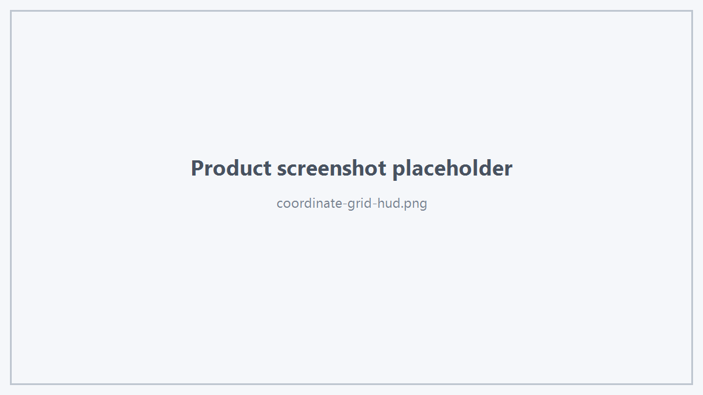

1. World Axis
viewer.setAxisVisible(true);
2. Scale Bar
viewer.setScaleBarVisible(true);
3. HUD Axis
viewer.setHudAxisVisible(true);
4. Background
viewer.setBackgroundColor(
HtsColor4f{0.08f, 0.10f, 0.13f, 1.0f});
5. Grid Plane Color
viewer.setGridPlaneColor(
HtsColor4f{0.25f, 0.28f, 0.32f, 1.0f});
6. Coordinate System
viewer.setCoordinateSystem(
"LocalCS",
origin,
xDirection,
yDirection,
zDirection,
20.0);
参数由业务程序提供，Viewer 不要求业务层使用特定 CAD Kernel 的坐标系类型。
7. Grid Frame
viewer.setGridFrame(
origin,
xDirection,
yDirection,
zDirection,
HtsGridPlane::XOY);
Plane：
查询：
HtsGridPlane plane = viewer.currentGridPlane();
double spacing = viewer.currentGridSpacing();

Coordinate Grid HUD
8. 使用建议
业务层应保证：
- origin 有效；
- x/y/z 方向符合业务坐标系定义；
- Grid Plane 与当前建模工作平面一致。
Viewer 只消费公开坐标数据，不要求业务程序暴露内部坐标系对象。
 1.18.0
1.18.0